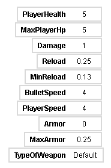

Рогалик
Это моя игра в жанре рогалик.
Управление: WASD(или ЦФЫВ) или ↑←↓→(Стрелки) чтобы двигаться, нажатие по мыши или пробел чтобы делать выстрелы.
Ты хочешь сыграть в игру?
Иди, вставь монету.
(П.С игра стабильно работает в chrome, edge и других(наверное), за исключением firefox - фпс ниже.)
(П.С.С если вам не нравиться размер игры, измените с помощью ctrl + или ctrl -)
Игра будет на белом фоне.
И покажет статистику йюо(тебя).

Давай узнаем что они означают.
- PlayerHealth - Ваше здоровье. Может быть приблавлен к максимуму от дропов восстановления - хилок и аптечек.
- MaxPlayerHp - Максимум вашего здоровья. Тоесть ты не можешь иметь здоровья, больше от этого показателя дропов восстановления.
- Damage - Урон ваших пулей. Может сократиться от дропов перезарядки.
- Reload - Перезарядка вашей атаки. Может увеличиваться(атака будет реже) от дропов урона.
- MinReload - Минимальная перезарядка вашей атаки. Не может изменятся в течение игры, но измениться при подборе дропов оружия.
- BulletSpeed - Скорость пулей вашей атаки. Может измениться от дропов скорости пулей.
- PlayerSpeed - Ваше движение. Может сократиться от дропов брони.
- Armor - Ваша броня. Может сократиться от дропов скорости.
- MaxArmor - Максимум вашей брони. Может увеличиться при досижении лимит вашей статистики.
- TypeOfWeapon - Тип вашего оружия. В начале это Default.
Игра сделана на Турбоварпе с расширениями.
Скачать исходный код(Файл будет в sb3 формате, откройте турбоварп чтобы работать с ним.)
Музыка, которая я использовал для игры:
- Secunda - Jeremy Soule (для Skyrim)
- Misantrop - Blod Besvimelse
- Outside Interference - corru works (для corru.observer)
- Hostile Rewrite - corru works (для corru.observer)
- War Without Reason - Heaven Pierce her (для Ultrakill)
- Ultimate Battle - Laura Shigihara (для PvZ)